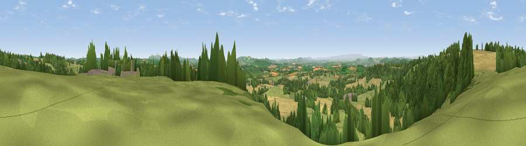

Viewpoint near Little Cowarne
#5681 in England · top 16% of its area beats it · near Little CowarneThe view, rendered

A 360° render of this exact spot computed from the terrain model, tree cover and land cover — summer colours, afternoon light, calibrated against photographs of famous viewpoints. Real trees, hedges and buildings will differ in detail.
The panorama
Grey silhouette: terrain skyline in each direction (720 bearings, Earth curvature and refraction included). Dashed green: skyline with trees (+15 m) and buildings (+8 m) as obstacles. Blue strip: how far the ground is visible on each bearing.
Where the view opens
Wedge length = distance to the farthest visible ground on that bearing (vegetation-aware). Rings at 10, 25 and 50 km.
What fills the view
38% grassland · 32% cropland · 29% woodland · 1% built-up
Angular shares of the visible panorama (visual magnitude), not map area. Landscape diversity 0.50 (0–1 Shannon).
Key numbers
More beautiful places nearby
The staircase of upgrades: each row has a higher view potential than everything closer. Driving times are estimates from straight-line distance, calibrated against real road routing — check an actual route before setting out.
| Place | Direction | Drive | Score |
|---|---|---|---|
| Viewpoint near Pencombe | NNW · 3 km | ~8 min | 72.8 |
| Viewpoint near Dormington | S · 12 km | ~22 min | 73.0 |
| Seagar Hill | SSE · 12 km | ~23 min | 82.1 |
| North Hill | ESE · 18 km | ~32 min | 86.8 |
| Worcestershire Beacon | ESE · 19 km | ~32 min | 87.1 |
| Viewpoint near West Quantoxhead | SSW · 118 km | ~142 min | 87.9 |
| Viewpoint near West Quantoxhead | SSW · 119 km | ~143 min | 88.7 |
| Holdstone Hill | SW · 141 km | ~165 min | 90.2 |
52.15474, -2.59960 · source: screening · position refined by local search. Computed location — check access rights before visiting.